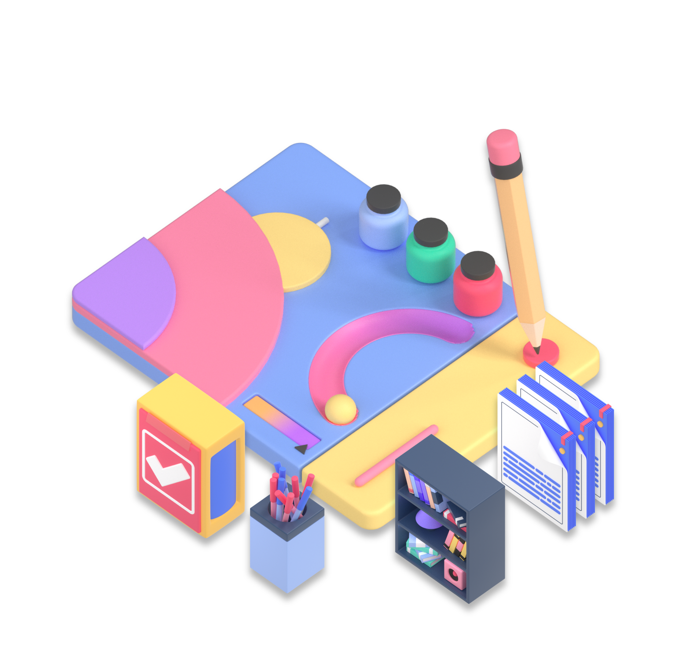

Home
Courses
Our Team
Schedule
Study Online
Sign Up

Data Analysis
Data analysis is a
process of inspecting, transforming and
modeling data with
the goal of
discovering useful
information, informing conclusions, and
supporting decision-making
Start Learning